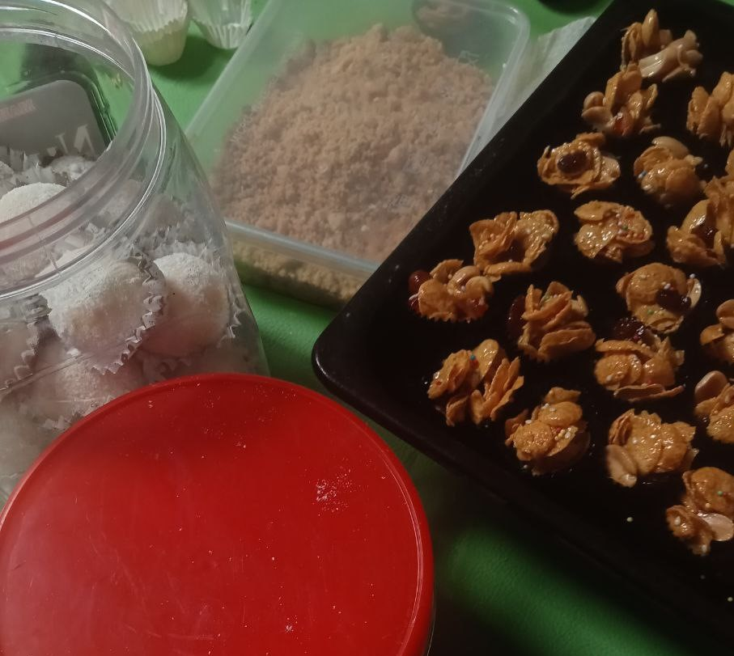

Now who doesn't have any hobby? Hobby is an activity that someone does in their free time for enjoyment and unwinding. Typically, people pursue their hobbies to gain enjoyment, self-satisfaction, and to develop new interests or talents. Hobbies might vary from artistic endeavours such as drawing, writing, or performing music to athletics, hiking, gardening, or other physical hobbies. Hobbies frequently provide people with a platform for self-expression, stress relief, and social interaction with like-minded others who have comparable interests. A person's choice of hobby is subjective and can differ greatly depending on their own interests and preferences.For me I have some hobbies that actually help me to release my stress and enjoy doing it.
As you can see from the pictures above, these are my top 5 anime that love. I actually have a lot more and actually faced a hard time while choosing cause I enjoy things quite easily tbh and I find these entertaining. I started watching anime when I was 13, by started I mean actually started watching from episode 1. I watched anime since I was a kid on television which does not even include all of the episode and very random sometimes so that does not count. I went to a lot of anime matsuri or anime fest and I did bought some anime merch. I'm too lazy to add pictures at this point so yeah. Anyways, you can read more about my top 5 anime at the favorite section under anime. You can also just click here.
I know, library student, of course I would love reading. Well it depends on what types of book it is too. Generally I do like reading but only books or materials that I found interesting though. I would say I'm quite a boring person and I do like to spend my free time alone. Reading books has been one of my favorite things to do since I was 11 years old. I started love books because of my friends. She was a librarian's prefect during my middle school. We usually spend lots of time together in the library. I started reading novels and boooks since that. It just grow on me and I start reading more following the time. I have a lot of books or novels that I really like. These are my top 3 books. Since I didn't put the list on my favourite section let me talk about my favourite books for a bit.
1) The Maze Runner Series
I don't know if you ever heard of The Maze Runner but it was a really good book by the author to the point it has been made into a movie. The genre of the books are sci-fiction and apocalyptic. There are 3 movies adapted based on this series and all of them recieve good views. It is basically about a group of teenage boys that got trapped or quarantine in a place to determine whether they are immune to the viruses. The adults think that they are the key to vaccine but in order to determine that they have to be put into a test and die in order to extract the 'cure' from them. I personally love both but I prefer the books more because it has more details and I can imagine the scene clearly in head. The Maze runner series has 5 books in total which are The Maze Runner, The Scorch Trial, The Death Cure, The Kill Order and The Fever Code. All of these books are written by James Dashner. I was really passionate about this book that I have watch a lot of videos of the interview and watch all of the movies in cinema when it was out. The are also rumored to be 2 more books but I did not know much about it since I haven't got time to read much lately
2) Harry Potter
Honestly who haven't watch Harry Potter yet? It's a school wizard theme, and we have Harry potter as the main character which is the key to defeat the most evil wizard there. Harry Potter is a very famous fantasy character from a novel that has been adapted into movies. Harry Potter has a lot of movies which a lot of people has seen. However, not all of the people who watched the movie has read the novel. In my opinion both novel and movies are good. But of course, the novels are more detailed. The movies even made some changes and does not follow the novels completely but it still turn out amazing. As a reader I do noticed the changes but I still like it. The novels are fun and exciting to read. Fantasy has always been one of my favourite book genre so, I really get immersed into the novels and really enjoy reading it. The Harry Potter novels are written by J.K. Rowling which is one of the famous author. Although I don't like the author because of some certain things I still can't deny that her works are actually good.
3) The Song of Archilles
The Song of Archilles is actually one of the masterpiece that I have read. The novel is written by Madeline Miller that retells the ancient Greek myth of Achilles and Patroclus. The story is narrated by Patroclus, who recounts his life from childhood to the Trojan War. The novel explores the deep and complex relationship between Achilles, a demigod and legendary Greek hero, and Patroclus, an exiled prince. The story is set during the Greek Heroic Age with the genre of fantasy and romance. Most people might not like this novel but I really like it. The relationship that the two main characters have is so pure and very heart warming. The novel is so very good. The emotion and feelings that they are trying to deliver really hits me and not only that it is enjoyable but it is also emotional. I cried reading this novel because of how the story is. The plot and the words that the characters said are really spectacular and touching.

I love baking more than I love cooking. I likes to cook but usually I just leave that to my sister cause she cooks better than me and her cooking is undoubtedly good. I am more good at baking than her though. The things that I like to bake are cakes, cookies, and a lot more but I did not took any pictures. I rarely took any pictures because someone else will eat it first before I could take the pictures. However, I was happy about it because it means that they are excited to try what I bake.
I play games quite a lot. I usually used up my free time just by playing games. The games that I play are actually so interesting and challenging. I love challenges so, playing these games are so fun to me. My top 3 games that I play for most of the time are Genshin Impact, Mobile Legend and Good Pizza. I usually just play this game using my tablet or mobile phone which is convinient because I can bring it everywhere with me.
Listening to music is the only hobby that I do everyday. I cannot complete my day without music. Music means a lot to, it can make me sad, happy, feel better, and just make me relax. Whenever I'm anxious I always listen to music to calm me down, it helps a lot. Of course I do listen to dzikir and surah too, which makes me feel at ease. It all just depends on my mood. Anyways, listening to music is something that I love. It's also help me to boost my mood sometimes and help me have motivation to do my work. In fact, I'm listening to music right now as I was writing this. I like to listen to various genre such as:
- Pop
- RNB
- Punk Rock
- Soul
- Indie
Also mostly, the songs that I listen to is English song, but I also enjoy listening to Malay songs, Thai songs, Japanese songs and Philiphines song. Thai songs has been in my top favorite lately to the point where I could understand the meaning of the song. I understand some of thai language cause I sing thai song a lot and I love watching Thai drama too. Anyway, to know my top 10 songs you can check out in the favorite section or just press here.